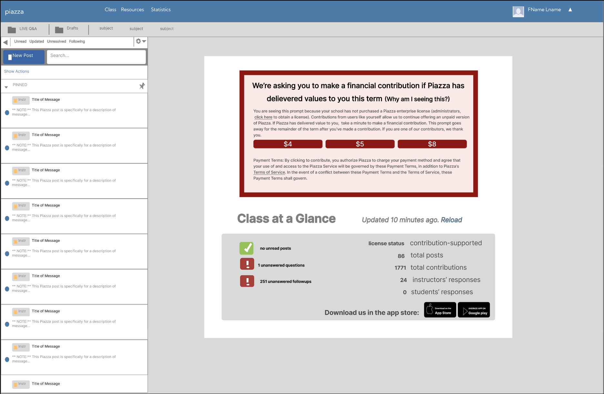
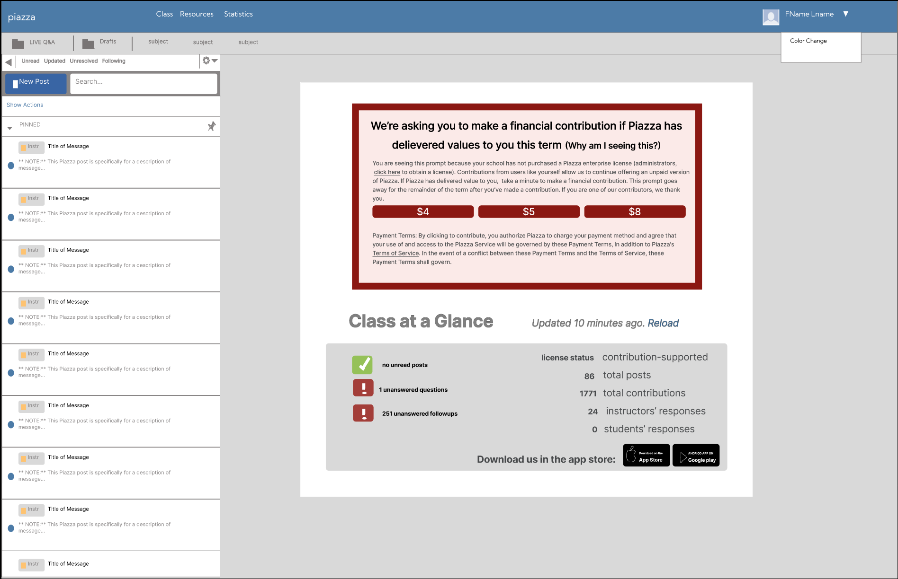
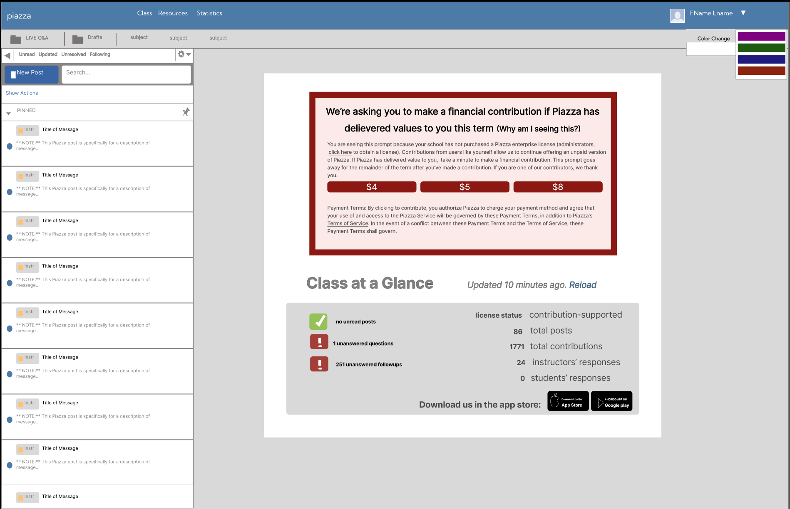
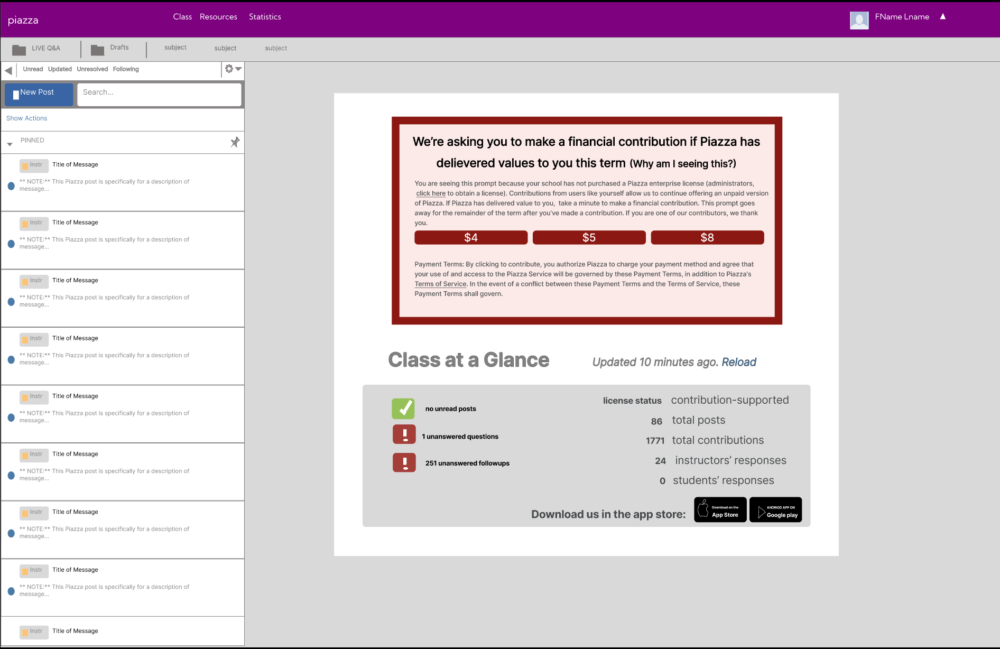
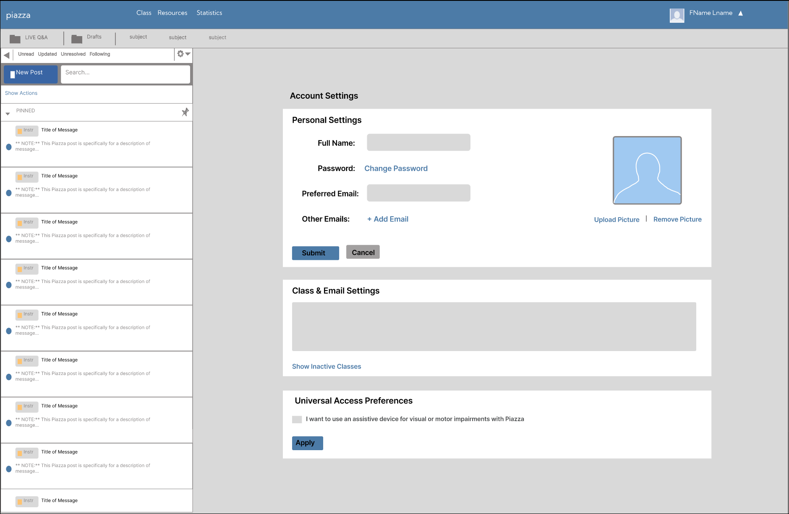
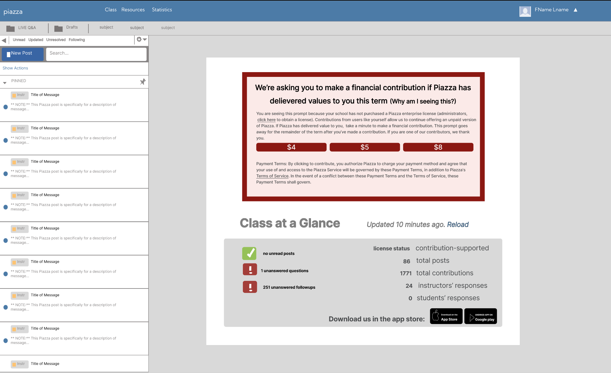
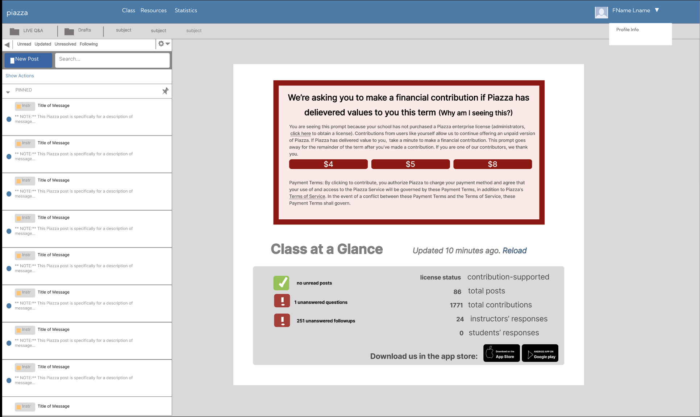
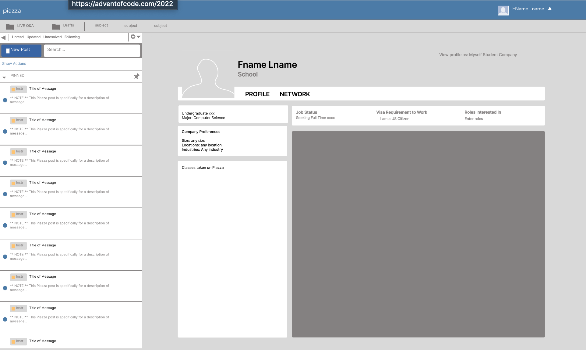

Milestone 4
Group 1:
These are all relevant to the proposed solution because each user story relates to changing the visual settings of the platform’s toolbar to match the users’ preference and/or increase readability. 1.4.3 Non-Text Contrast (Minimum) 1.4.1 Use of Color 3.5 Visual contrast of Text (https://www.w3.org/TR/wcag-3.0/)
User Story 1:
As a Student with Irlen Syndrome who uses piazza, I want to change the colors of my toolbar, so that I can better read the text on the platform’s toolbar.
Alt Design Idea: Put the color changer in a drop down menu under profile.
Justification: In our problem of study, readability was a prevalent problem in the toolbar. The icons and tabs were difficult to identify. Reasons for this are lack of contrast because of colors. To address the issue our user story prompts a clear need of “As a Student with Irlen Syndrome who uses piazza, I want to change the colors of my toolbar, so that I can better read the text on the platform’s toolbar.” In this frame and interaction, the change that was made was moving the color changing option to be under settings opposed to being on the toolbar with no text indicting what it’s purpose is. The interaction progresses as the user will have the desire to change the color of their toolbar on piazza, hover over the settings toolbar option and then see the color changing option under the dropdown menu. From there (unseen) the user will navigate to their settings console and have the options the change the color. We justified removing and relocating the color changing option from the toolbar, because according a research paper on “Enhancing the Design of Web Navigation Systems” written by Jane Webster and Jaspreet Ahuja, they conclude that it is important that users have context for the meaning behind icons and what they do, and that also depends on where they are on the page. On other popular forum-thread based platforms, such as Discord, options to change the color of the user’s console it located in the settings, hence the reason why it has been suggested to move there. We chose this idea as our high fidelity one because the research we found indicated that this option was the better one in terms of user experience. References https://www.jstor.org/stable/25148744#metadata_info_tab_contents https://discord.com/




User Story 2:
As a teacher, I want to be able to identify the settings icon, so that I can navigate to the settings.
Alt Design Idea: Have the settings icon in a drop down menus under profile instead
Description & Justification *: In our problem of study, readability was a prevalent problem in the toolbar. The settings icon was difficult to identify as the logo was not clear or distinguishable. Reasons for this are lack of contrast or unclear logo without description. To address the issue our user story prompts a clear need of “As a teacher, I want to be able to identify the settings icon, so that I can navigate to the settings.” In this frame and interaction, the change that was made was removing the settings gear from the top right of the console’s page. The interaction progresses as the user will now hover over their profile name, and upon the dropdown menu options, settings will be a navigation option. The user will then be able t view their setting console on a different page. We justified adding a dropdown menu under the Profile icon, because according to an article written by the Neilson Norman Group, they conclude added dropdown menus (especially with clear accordion, caret icon indicators) helps make page content and page length manageable for users. Justification for moving the “settings” navigation option to the dropdown menu is based on other popular educational web applications. ELC, a popular education platform, has a similar UI where the user icon and name has a dropdown menu with settings as a navigation option. We chose this idea as our high fidelity one because the research we found indicated that this option was the better one in terms of user experience. References https://www.nngroup.com/articles/accordion-icons/ https://uga.view.usg.edu/d2l/home


User Story 3:
As a student, I want to be able to access my profile so that I can edit my name and other personal information.
Alt Design Idea: Have the profile icon incude a hover drop down menu to navigate to specifc places in profile.
Description & Justification: In our problem of study, readability was a prevalent problem in the toolbar. The profile icon was difficult to identify as the logo was not clear or distinguishable. Reasons for this are lack of contrast or unclear logo without description. In this frame and interaction, the change that was adding a hover dropdown menu under the user’s profile icon, with a navigation option to. The interaction progresses as the user will now hover over their profile name, and upon the dropdown menu options, profile info will be a navigation option. The user will then be able to view their profile information console on a different page. We justified adding a dropdown menu under the Profile icon, because according to an article written by the Neilson Norman Group, they conclude added dropdown menus (especially with clear accordion, caret icon indicators) helps make page content and page length manageable for users. Justification for moving the “Profile Info” navigation option to the dropdown menu is based on other popular educational web applications. ELC, a popular education platform, has a similar UI where the user icon and name has a dropdown menu with profile as a navigation option. We chose this idea as our high fidelity one because the research we found indicated that this option was the better one in terms of user experience. References https://www.nngroup.com/articles/accordion-icons/ https://uga.view.usg.edu/d2l/home


